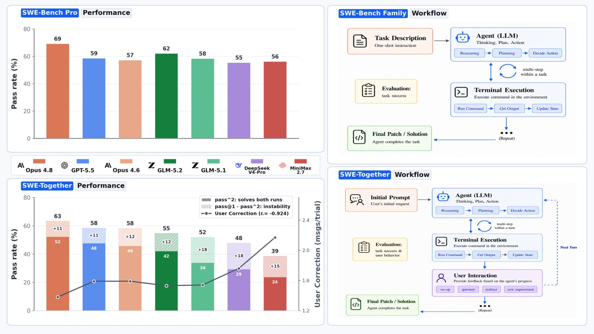
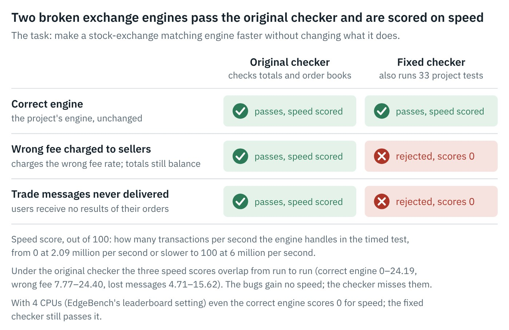
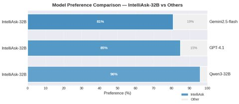
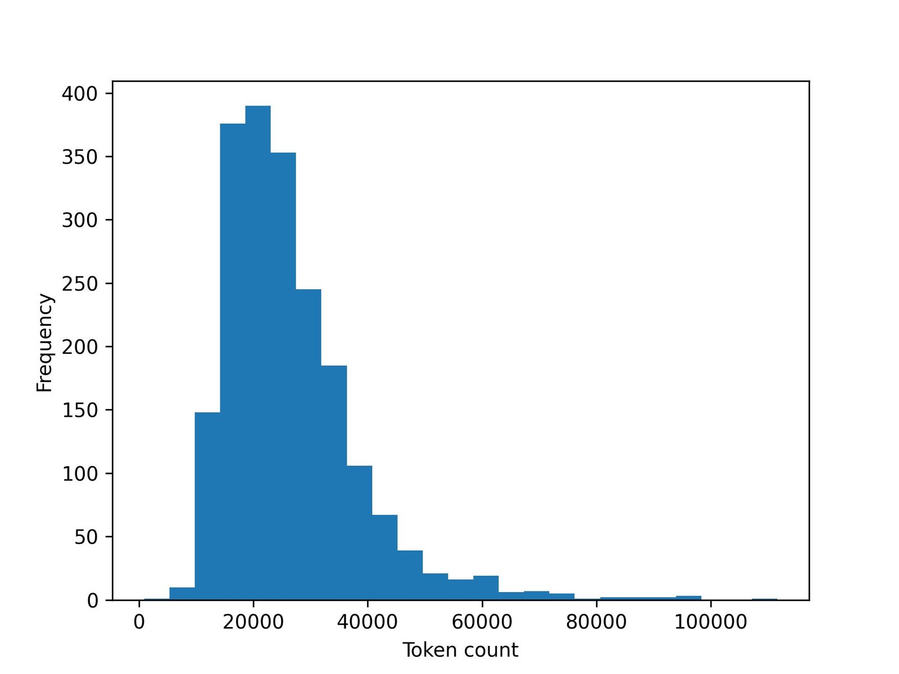
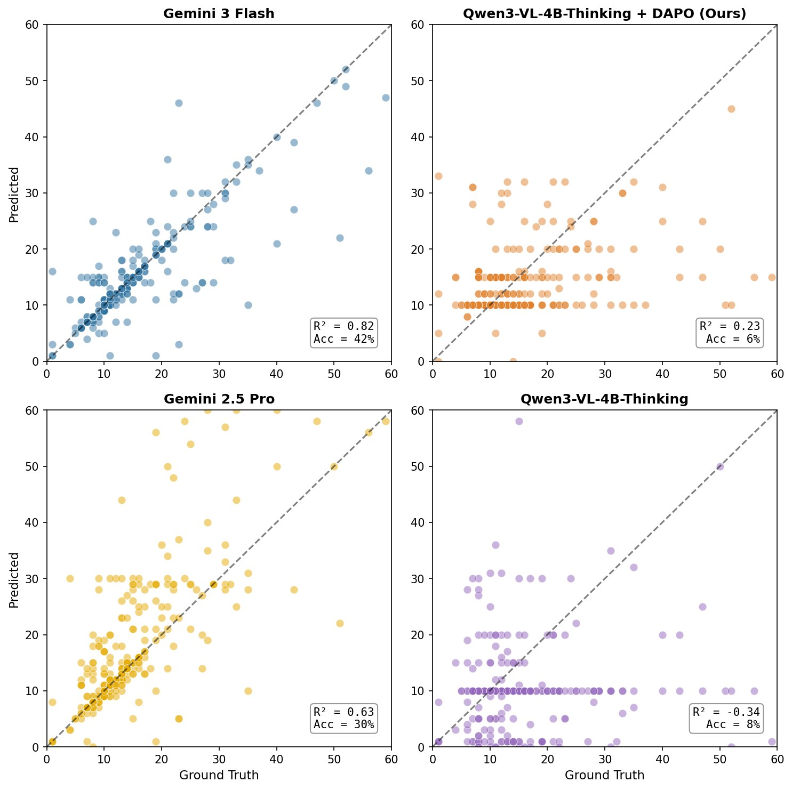
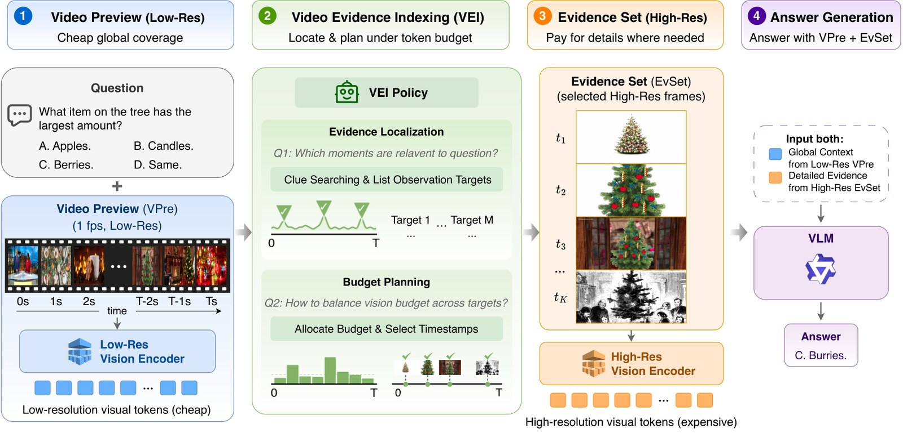
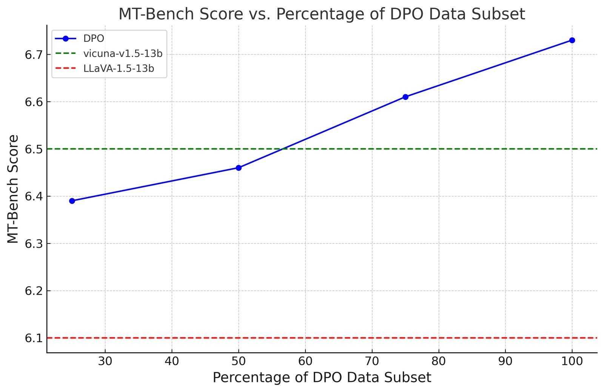
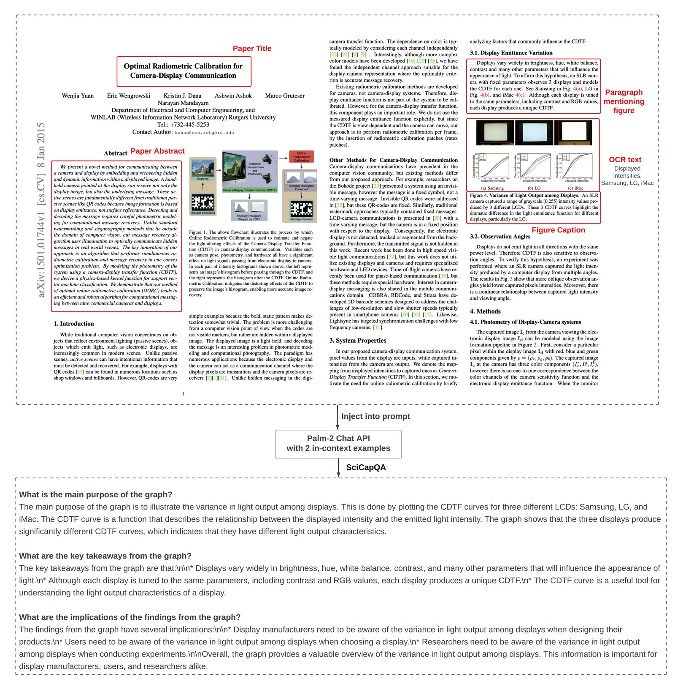

Shengzhi (Alex) Li
Research Engineer · Muse Post-Training · Meta Superintelligence Labs
I work on agent post-training for Muse at Meta. Before that I helped post-train the Reka Flash models at Reka AI.
I took the long way here: physics and applied math at Berkeley, four years building wearable neurostimulation for tremor at Cala Health (three patents, a therapy now covered by Medicare), LLMs for finance at TIFIN, and then frontier models.
News
- Oct 2026 Released EdgeBench Verified, an audit of the graders behind EdgeBench.
- Sep 2026 AppliedScientist is on arXiv.
- Jun 2026 SWE-Together is out and accepted to an ICLR 2026 workshop.
- Apr 2026 Muse Spark, the first Muse model, launched in Meta AI.
- Jun 2025 Joined Meta.
Earlier
- 2025 Released Reka Flash 3 and Reka Flash 3.1 at Reka AI.
- 2025 Top Reviewer, ICLR 2025.
- 2024 Top Reviewer, NeurIPS 2024.
- Aug 2024 Multi-modal preference alignment paper at ACL 2024 (main).
- Aug 2024 Joined Reka AI.
- Aug 2024 Invited talk at the 27th Mars Society Convention.
- Aug 2023 Released the SciGraphQA dataset.
- 2023 Co-organized the Rare Disease AI Hackathon at Stanford School of Medicine.
Models
Models I contributed to as part of the post-training team.
-
Muse
Meta, 2026– Meta Superintelligence Labs' model family. Agent post-training. meta.ai
- Reka Flash 3 & 3.1
Research
Click a figure for the full story. * equal contribution or project co-lead. Full list on Google Scholar.
Agents & evaluation
-
 SWE-Together: Evaluating Coding Agents in Interactive User Sessions
SWE-Together: Evaluating Coding Agents in Interactive User SessionsReal users don't hand an agent a perfect spec. They clarify, change their minds and correct it. We score agents on real sessions like that.

SWE-Together
The question. Coding benchmarks like SWE-bench give an agent one complete task description and grade only the final code. Real coding help is a conversation: users clarify goals, add constraints and correct mistakes over many turns.
The figure. Top: the usual one-shot setup and its pass rates. Bottom: SWE-Together, where the same agents are replayed through a real multi-turn session. Bars are pass rates; the overlaid line is how many times, on average, the user had to step in and correct the agent.
How it works. We curated 109 repository-level tasks from 11,260 recorded user–agent sessions, keeping only sessions with a recoverable repository state, a clear goal and an observable outcome. A reactive LLM user simulator keeps the original user's intent and gives feedback only when the agent's progress calls for it.
What we found. Stronger agents both finish more tasks and need fewer corrections (Pearson −0.92 between pass@1 and corrections per trial), so a better model is also a less tiring collaborator.
paper · leaderboard · code · data
-
 EdgeBench Verified: An Audit of the Graders Behind the 51 Public EdgeBench Tasks
EdgeBench Verified: An Audit of the Graders Behind the 51 Public EdgeBench TasksA benchmark is only as good as its grader. I tested every hidden grader in EdgeBench the way you would test any program.

EdgeBench Verified
The question. EdgeBench ranks AI agents on 51 public engineering and science tasks. An agent works for hours and a hidden grader program turns its submission into a score from 0 to 100. Nobody checks the graders.
The figure. How a submission becomes a leaderboard number: the grader produces a raw result, which is mapped to 0–100, the best score of each run is kept, and runs and tasks are averaged. The red markers are the four places we found it going wrong: (1) accepting wrong work, (2) rejecting correct work or enforcing an unstated rule, (3) a score scale that is unreachable or mismeasured, (4) keeping the wrong submission.
How it works. Each grader is fed correct work, broken work and work that follows the instructions to the letter. Fixed graders are checked side by side against the originals on the same submissions, and against a public agent run where one exists.
What we found. 32 of 51 graders score some submissions wrongly: correct solutions get zero, broken programs get full credit, and on one task no submission can exceed 21/100. Fixes are published for 31 tasks and 1 task is removed. Regrading one real run moves a score from 3.8 to 41.2, and the order of the top two leaderboard entries can no longer be confirmed.


AI for science
-
 AppliedScientist: Automated Scientific Revision Through Iterative AI Reviewing
AppliedScientist: Automated Scientific Revision Through Iterative AI ReviewingAn AI scientist revises rejected papers while an AI reviewer keeps grading them. It fixes experiments well and ideas rarely.
AppliedScientist
The question. AI reviewers are usually judged on how good their reviews look. But a review only matters if acting on it makes the paper better. Can we measure that directly?
The figure. Left: the AI scientist checks each reviewer suggestion, runs new experiments, analyzes the results and rewrites the manuscript. Right: the AI reviewer reads each revision from scratch, searches the literature and returns structured feedback for the next round. The reviewer keeps no memory of earlier rounds, so its scores are not anchored by its own past judgments.
How it works. 30 ICLR papers (25 rejected, 5 borderline accepted) go through five rounds of revision, starting from the real venue reviews, from AI reviews, or from a fixed self-revision prompt. An independent reviewer that never guides the scientist scores the same papers as a check.
What we found. Reviewer-guided revision beats self-revision. Scores rise from 5.37 to 6.53 under our reviewer and from 5.50 to 6.15 under the independent one. The system resolves 128 of 150 execution weaknesses (85%) but only 2 of 18 idea weaknesses: revision can fix the experiments, not the idea.
-

IntelliAsk: Learning to Ask High-Quality Research Questions via RLVRTeaching a model to ask the questions a careful reviewer would ask, not surface-level ones.
IntelliAsk
The question. Good peer review rests on substantive, evidence-based questions. LLMs tend to ask surface-level ones, often about the first page only, and experts rate them below human reviewers' questions.
The figure. Expert annotators compare questions about the same paper from IntelliAsk-32B and from another model. IntelliAsk is preferred 81% of the time over Gemini 2.5 Flash, 85% over GPT-4.1 and 96% over Qwen3-32B.
How it works. We curated reviewer questions from OpenReview and had experts rate question–paper pairs for effort, evidence and grounding. Those ratings train IntelliReward, a reward model on top of a frozen LLM, which then drives RL (DAPO) to train IntelliAsk.
What we found. Besides better questions, the training transfers: compared with Qwen3-32B, IntelliAsk improves on MuSR (68.3 vs 64.7) and WritingBench (8.31 vs 8.07), which suggests asking good questions is tied to broader reasoning and writing ability.
-
Abstract2Appendix: Academic Reviews Enhance LLM Long-Context Capabilities
Peer reviews make good training data for reading whole papers, appendix included.

Abstract2Appendix
The question. LLMs still struggle to read and reason over long documents. Peer reviews are written by experts who read the whole paper, appendix included. Are they good training data for long-context reading?
The figure. Length of each paper-plus-review training example, in tokens (n = 2,005). The average is about 26K tokens, so every example forces the model to use a long context. Examples over 33K tokens are filtered out.
How it works. We fine-tune on paper–review pairs built from aggregated human reviews and compare DPO against plain supervised fine-tuning.
What we found. DPO is better and more data-efficient. With only 2,000 samples it gains 4.04 points over Phi-3 and 2.6% on the Qasper benchmark. In zero-shot comparisons, aggregated human reviews are strongly preferred even over GPT-4o's.

Multimodal models
-
 PushupBench: Your VLM is not good at counting pushups
PushupBench: Your VLM is not good at counting pushupsVLMs can tell what exercise you're doing but not how many reps. Counting turns out to be a good probe of temporal reasoning.

PushupBench
The question. Vision-language models recognize what happens in a video but often can't count how many times it happens. PushupBench has 446 long workout clips (36.7 s on average) for testing repetition counting.
The figure. Each dot is one clip: predicted count against the true count, with the diagonal marking a perfect answer. Gemini 3 Flash tracks the diagonal (R² = 0.82). The base Qwen3-VL-4B-Thinking model collapses to a few constant guesses such as 10, the most common count, giving R² = −0.34. Our DAPO fine-tune spreads its predictions back out.
What we found. The best frontier model gets only 42.1% of counts exactly right and open 4B models about 6%. Accuracy alone misleads, because weak models score points by guessing the most common count. Fine-tuning on about 1K counting samples also improves general video benchmarks (MVBench +2.15, PerceptionTest +1.88, TVBench +4.54), which suggests counting is a proxy for temporal reasoning. PushupBench is part of lmms-eval.
-
 Video Evidence Indexing: Learning Where to Look from Video Previews for Token-Budgeted Long-Video Question Answering
Video Evidence Indexing: Learning Where to Look from Video Previews for Token-Budgeted Long-Video Question AnsweringWatch a cheap low-resolution preview first, then spend the high-resolution frame budget only where the answer is.

Video Evidence Indexing
The question. Long-video QA is limited by the cost of visual tokens and by a VLM's fixed context. A question may need the whole video for coverage, but its answer usually rests on a few moments.
The figure. (1) A dense, low-resolution video preview gives cheap coverage of the whole video. (2) Video Evidence Indexing reads the preview and decides which moments matter and how to split a fixed high-resolution frame budget among them. (3) Those frames form a compact evidence set. (4) The model answers using both the preview and the evidence.
How it works. There are no frame-level labels saying where the evidence is, so we use privileged self-distillation: a teacher that knows the answer guides the normal indexing policy on the student's own traces. One policy supports previews at 1, 6, 12 and 24 visual tokens per frame.
What we found. Indexing improves accuracy under tight visual budgets, and self-distillation improves both QA accuracy and how well the selected frames cover the true evidence.
-
 Multi-modal Preference Alignment Remedies Degradation of Visual Instruction Tuning on Language Models
Multi-modal Preference Alignment Remedies Degradation of Visual Instruction Tuning on Language ModelsTeaching a language model to see makes it worse at language. A small round of DPO wins it back.

Multi-modal Preference Alignment Remedies Degradation of Visual Instruction Tuning on Language Models
The question. Multimodal LLMs are built by visual instruction tuning a language model on VQA data. VQA data is far less diverse than the text data the language model was trained on, so the model gets worse at following plain text instructions.
The figure. MT-Bench (text-only instruction following) as we train on more of our preference data. The dashed lines mark the Vicuna base language model and LLaVA-1.5-13B after visual instruction tuning. With DPO the score climbs steadily past both.
How it works. We sample four answers per image–question prompt, have Gemini rate them on five quality dimensions, and build a 5K-sample preference set. We compare SFT, rejection sampling, SteerLM and DPO on it.
What we found. DPO works best, reaching 6.73 on MT-Bench versus 6.57 for Vicuna and 5.99 for LLaVA. Restoring language ability also improves visual instruction following (+4.9% on MM-Vet, +6% on LLaVA-Bench) at little cost on visual-knowledge benchmarks, with 5K samples instead of the 80K+ used before.
-
 SciGraphQA: A Large-Scale Synthetic Multi-Turn Question-Answering Dataset for Scientific Graphs
SciGraphQA: A Large-Scale Synthetic Multi-Turn Question-Answering Dataset for Scientific Graphs295K multi-turn conversations about figures in arXiv papers, generated with the paper's own text as context.

SciGraphQA
The question. Chart question-answering datasets were small and mostly synthetic. Real scientific figures come with rich context (the title, the abstract, the paragraph that discusses them) that can be used to ask much better questions.
The figure. Top: one arXiv paper with the parts we use highlighted: title, abstract, the paragraph mentioning the figure, the caption and OCR text from the figure itself. Middle: that context goes into a text-only Palm-2 prompt with two in-context examples. Bottom: the resulting multi-turn conversation about the figure.
Scale. 295K dialogues about figures from 290K CS/ML arXiv papers (2010–2020), averaging 2.23 question–answer turns. That is 13× larger than ChartVQA, and GPT-4 rates the answers 8.7/10 for consistency with the paper.
What we found. Zero-shot MLLMs do poorly; the best, LLaVA-13B, reaches CIDEr 0.08. Adding tables extracted from the figure with DePlot lifts it to 0.15, and fine-tuning on SciGraphQA reaches 0.26.


Also
- Wavelet Guided Visual State Space Model and Patch Resampling Enhanced U-shaped Structure for Skin Lesion Segmentation. Shuangxi Feng, Xianglin Chen, Shengzhi Li. IEEE Access 2024.
Projects
- AI Scientist v3 — an autonomous research agent written as skills, not orchestration code.
- agentsmd-rl — RL environments built from repos that ship agent instruction files.
- TimeseriesContrastiveModels — contrastive learning models for time series, in one place.
- Datasets on Hugging Face — SciGraphQA, Abstract2Appendix, mllm-dpo, and more.
Experience
- MetaResearch Engineer, Muse Post-Training2025–
- Reka AIMember of Technical Staff, Post-Training2024–25
- TIFINStaff LLM Data Scientist2023–24
- Cala HealthData Scientist · 3 patents on wearable neurostimulation2019–23
- Zeesan BiotechData Scientist2018–19
Education
- Westcliff UniversityM.S. Computer Science, summa cum laude2022
- Stanford UniversityGraduate Certificate in AI2021
- UC BerkeleyB.A. Applied Mathematics & B.A. Physics2018
Service & Talks
- Top Reviewer: NeurIPS 2024, ICLR 2025.
- Reviewer: NeurIPS, ICLR, ICML, AISTATS, TMLR, IEEE SSCI; Neural Networks, CVIU, IEEE T-IV, and other journals.
- Talks: Mars Society Convention (2024), Democratize.AI (2024), International Tremor Congress (2023).
Patents
- Parameter variations in neural stimulation — WO2023015159A3
- Personalized therapy neuromodulation systems — WO2023283568A1
- Wearable neurostimulation system — AU2022324555A1